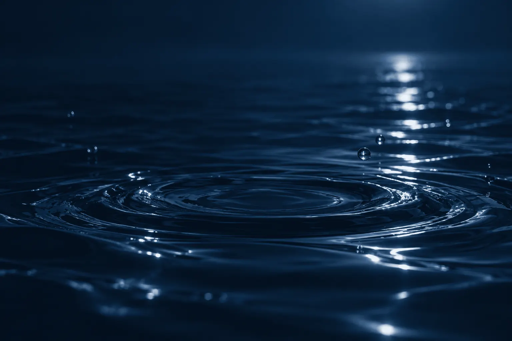
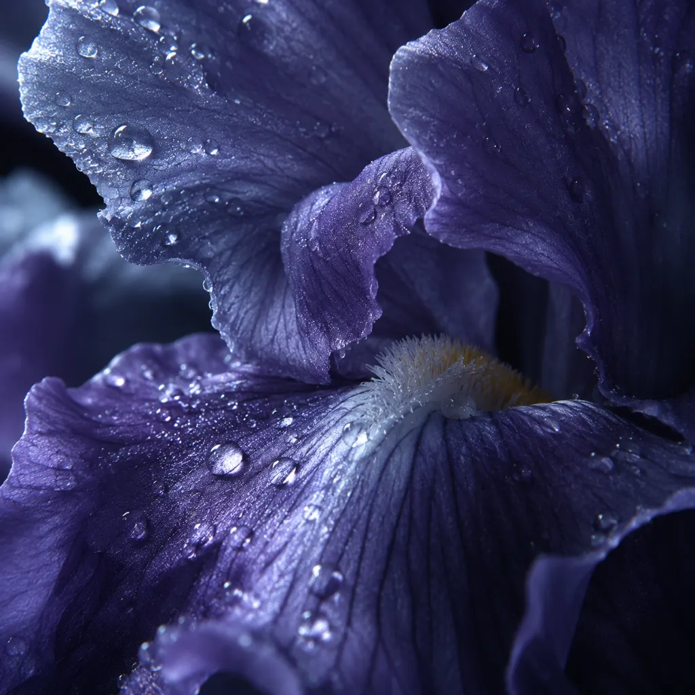
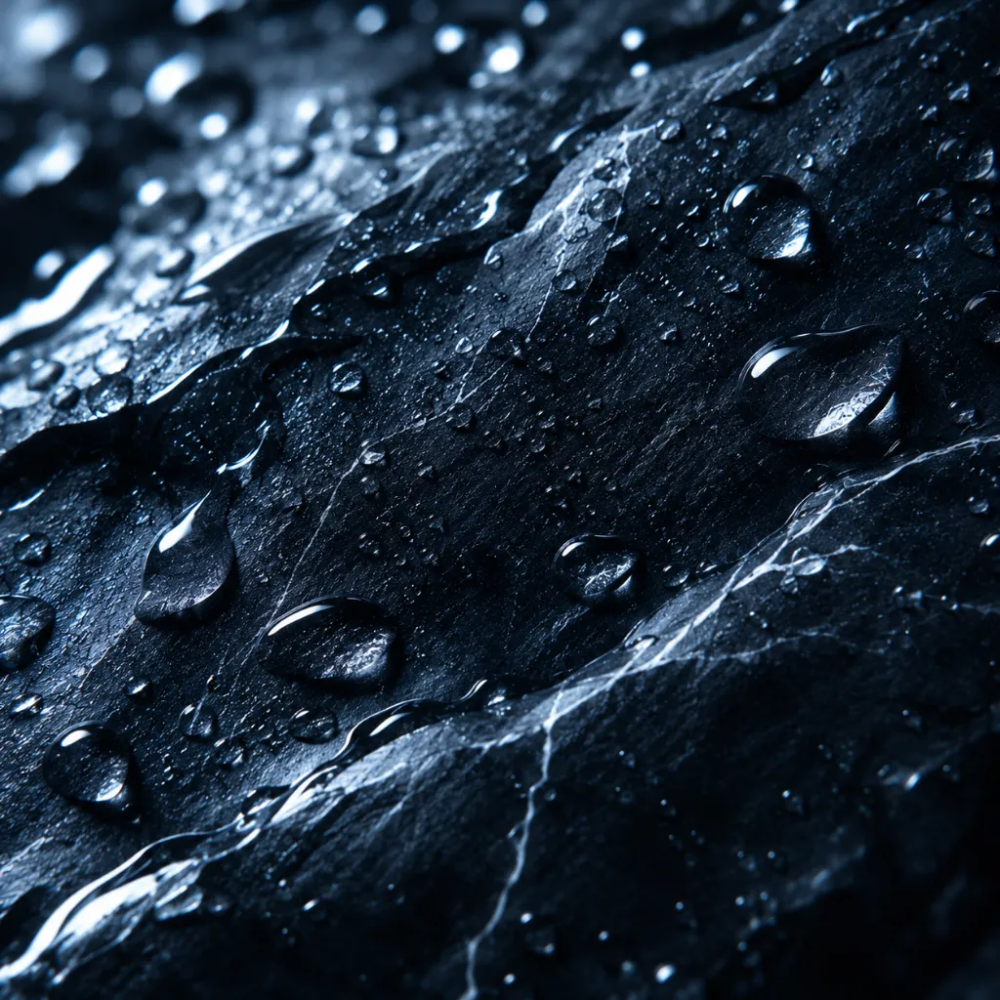
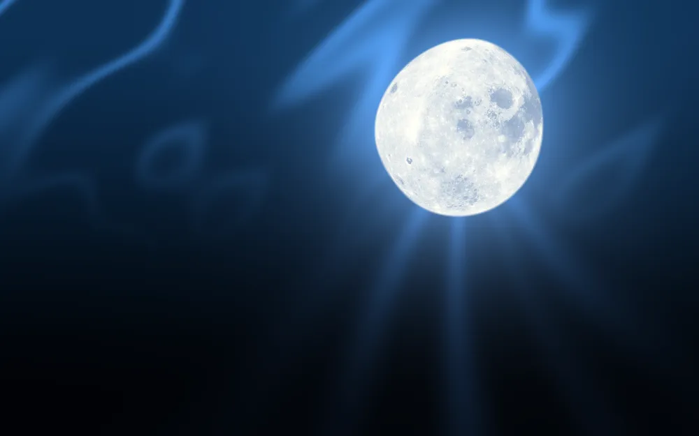

Agua oscura · eau de parfum
Sal marina, iris y piedra mojada, en vidrio azul de medianoche.
Reservar mi frasco200 frascos numerados · Hoy no pagas nada

Lote 03 · cómo se abre
Agua fría,
después piel
Se pone como un lago de noche: sal, mineral, casi demasiado limpio. Diez minutos después el iris se templa y tu piel hace el resto.
La fórmula
Una gota, tres notas
-
Al aplicar
Sal marina
El aire de la orilla antes de que nadie se levante. Brillante, mineral, se va en una hora.
-

A las 2 horas
Iris
Raíz fría y empolvada, como una iglesia de piedra en agosto. Es la nota que se queda en la piel.
-

A las 8 horas
Piedra mojada
Lluvia secándose en la acera. Callada, pegada a la muñeca, sigue ahí pasada la medianoche.

Lote 03 · 200 frascos numerados
Reserva el tuyo
Agua oscura · eau de parfum · 100 ml
180 €
- Hoy no pagas nada: solo guardamos tu frasco.
- Recargas a mitad de precio.
- El vidrio es tuyo para siempre: tráelo y vuelve lleno.